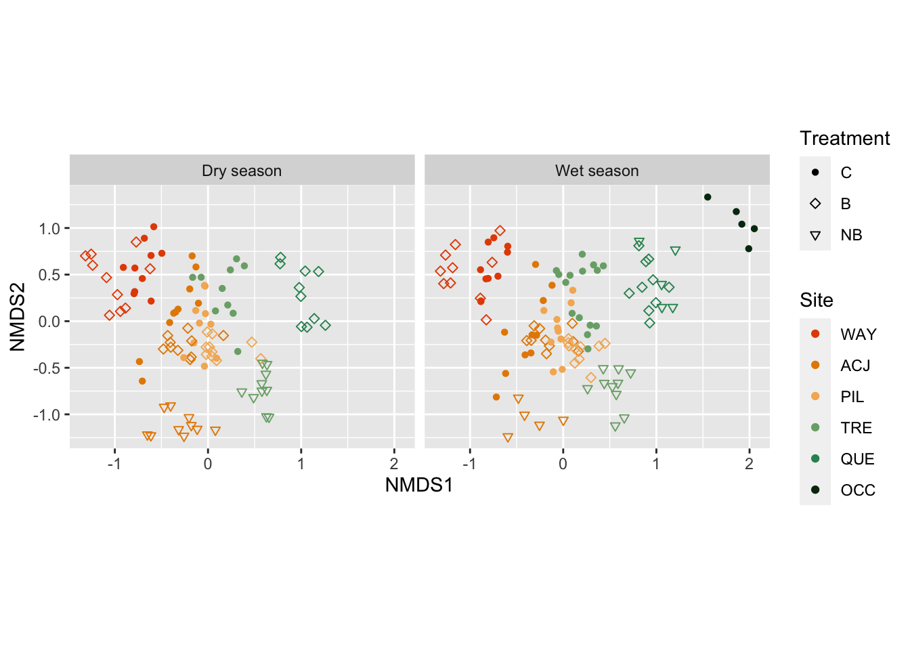

library(dataDownloader)
get_file(node = "gs8u6",
file = "PFTC3-Puna-PFTC5_Peru_2018-2020_CommunityCover_clean.csv",
path = "clean_data",
remote_path = "community")9 Plant community composition data
For this tutorial we will use the follwoing packages: tidyverse, vegan, ggvegan and broom.
9.1 The data
We will use the data from PFTC3 and 5 from Peru.
To download the data use this code:
This dataset contains percentage cover for 143 species along an elevational gradients in Peru. Three different treatments related to fire history: control (C), burnt (B) and newly burnt (NB)). For more information about the sites and measurements see here.
To read in the data use the code below. Note that we remove the treatment BB which has only a few observation from one site.
comm <- read_csv("data/PFTC3-Puna-PFTC5_Peru_2018-2020_CommunityCover_clean.csv") |>
filter(treatment != "BB")
#> Rows: 3665 Columns: 15
#> ── Column specification ────────────────────────────────────────────────────────
#> Delimiter: ","
#> chr (8): season, month, site, treatment, family, functional_group, taxon, co...
#> dbl (7): year, plot_id, cover, burn_year, elevation, latitude, longitude
#>
#> ℹ Use `spec()` to retrieve the full column specification for this data.
#> ℹ Specify the column types or set `show_col_types = FALSE` to quiet this message.9.2 Diversity indices
One way to quantify the number of species species is to calculate diversity indices. Some common indices are species richness, diversity and evenness.
To calculate these indices we are using the vegan package.
## Calculate responses
diversity_index <- comm |>
group_by(year, month, site, elevation, treatment, plot_id) |>
summarise(richness = n(),
diversity = diversity(cover),
evenness = diversity/log(richness)) |>
# make long dataframe
pivot_longer(cols = c(richness:evenness), names_to = "index", values_to = "value") |>
mutate(index = factor(index, levels = c("richness", "diversity", "evenness")))
#> `summarise()` has grouped output by 'year', 'month', 'site', 'elevation',
#> 'treatment'. You can override using the `.groups` argument.We can now test if these diversity indices are different between the sites along the elevational gradient and the treatments. We will use a simple linear model with diversity index as response and the interaction of elevation and treatment as predictor.
diversity_result <- diversity_index |>
filter(treatment %in% c("C", "B", "NB")) |>
mutate(treatment = factor(treatment, levels = c("C", "B", "NB"))) |>
group_by(index) |>
nest(data = -c(index)) |>
mutate(model = map(data, ~lm(value ~ elevation * treatment, data = .x)),
result = map(model, tidy)) |>
unnest(result)
diversity_result |>
select(index, term:p.value) |>
kbl(digits = 2)| index | term | estimate | std.error | statistic | p.value |
|---|---|---|---|---|---|
| richness | (Intercept) | 6.39 | 5.11 | 1.25 | 0.21 |
| richness | elevation | 0.00 | 0.00 | 2.25 | 0.03 |
| richness | treatmentB | -15.81 | 7.41 | -2.13 | 0.03 |
| richness | treatmentNB | -105.11 | 15.57 | -6.75 | 0.00 |
| richness | elevation:treatmentB | 0.00 | 0.00 | 2.30 | 0.02 |
| richness | elevation:treatmentNB | 0.03 | 0.00 | 6.44 | 0.00 |
| diversity | (Intercept) | 1.59 | 0.49 | 3.24 | 0.00 |
| diversity | elevation | 0.00 | 0.00 | 0.63 | 0.53 |
| diversity | treatmentB | -0.59 | 0.71 | -0.83 | 0.41 |
| diversity | treatmentNB | -7.06 | 1.49 | -4.72 | 0.00 |
| diversity | elevation:treatmentB | 0.00 | 0.00 | 0.86 | 0.39 |
| diversity | elevation:treatmentNB | 0.00 | 0.00 | 4.47 | 0.00 |
| evenness | (Intercept) | 0.70 | 0.15 | 4.80 | 0.00 |
| evenness | elevation | 0.00 | 0.00 | -0.29 | 0.77 |
| evenness | treatmentB | -0.06 | 0.21 | -0.26 | 0.79 |
| evenness | treatmentNB | -1.01 | 0.45 | -2.27 | 0.02 |
| evenness | elevation:treatmentB | 0.00 | 0.00 | 0.24 | 0.81 |
| evenness | elevation:treatmentNB | 0.00 | 0.00 | 2.16 | 0.03 |
Species richness and diversity increase for the NB treatment, but not for the other treatments.
Check model assumptions
To check if the model assumptions are met, we will use the performance package.
Diversity change with elevation
We can plot the diversity indices across elevation.
diversity_index %>%
ggplot(aes(x = elevation, y = value, colour = treatment, fill = treatment)) +
geom_point(alpha = 0.4) +
geom_smooth(method = "lm", formula = "y ~ x", alpha = 0.2) +
scale_colour_manual("Treatment", values = puna_treatment_colour$colour[1:3]) +
scale_fill_manual("Treatment", values = puna_treatment_colour$colour[1:3]) +
labs(x = "Elevation m a.s.l", y = "") +
guides(linetype = "none",
fill = "none",
colour = guide_legend(override.aes = list(fill = NA))) +
facet_wrap( ~ index, scales = "free_y")Discuss restuls…
9.3 Multivariate analysis - NMDS ordination
In addition to univariate descriptor of communities such as diversity indices, we might be interested in the species composition along the elevational gradient.
A common method is non-metric multidimensional scaling (NMDS). A NMDS collapses information from multiple dimensions to a few dimensions. This allows to visualise the data more easily.
An NMDS can be done using the metaMDS() function form the vegan package.
cover_fat <- comm %>%
select(-family, -functional_group, -c(burn_year:course)) %>%
arrange(year, season, month) %>%
pivot_wider(names_from = "taxon", values_from = "cover", values_fill = 0) %>%
ungroup()
cover_fat_spp <- cover_fat %>% select(-(year:plot_id))
set.seed(32)
NMDS <- metaMDS(cover_fat_spp,
noshare = TRUE,
try = 30,
trace = 0)
fNMDS <- fortify(NMDS) %>%
filter(Score == "sites") %>%
bind_cols(cover_fat %>% select(year:plot_id))Check stress… (explain what it is and why it is done)
NMDS_1 <- metaMDS(cover_fat_spp, noshare = TRUE, try = 30, k = 1)
NMDS_2 <- metaMDS(cover_fat_spp, noshare = TRUE, try = 30, k = 2)
NMDS_3 <- metaMDS(cover_fat_spp, noshare = TRUE, try = 30, k = 3)
NMDS_4 <- metaMDS(cover_fat_spp, noshare = TRUE, try = 30, k = 4)
NMDS_5 <- metaMDS(cover_fat_spp, noshare = TRUE, try = 30, k = 5)
NMDS_6 <- metaMDS(cover_fat_spp, noshare = TRUE, try = 30, k = 6)
tibble(
stress = c(NMDS_1$stress, NMDS_2$stress, NMDS_3$stress, NMDS_4$stress, NMDS_5$stress, NMDS_6$stress),
dimensions = c(1:6)) %>%
ggplot(aes(x = dimensions, y = stress)) +
geom_point()Discuss the results of the stress plot and what desicion is taken. How many dimesions are chosen.
Visualise
The output of an ordination can be visualised.
fortify(fNMDS) %>%
mutate(treatment = factor(treatment, levels = c("C", "B", "NB")),
site = factor(site, levels = c("WAY", "ACJ", "PIL", "TRE", "QUE", "OCC")),
season = if_else(season == "dry_season",
"Dry season",
"Wet season")) %>%
ggplot(aes(x = NMDS1, y = NMDS2, colour = site, shape = treatment)) +
geom_point() +
scale_colour_manual("Site", values = puna_site_colour$colour) +
scale_shape_manual("Treatment", values=c(16, 5, 6)) +
coord_equal() +
facet_wrap(~ season)
Discuss results.